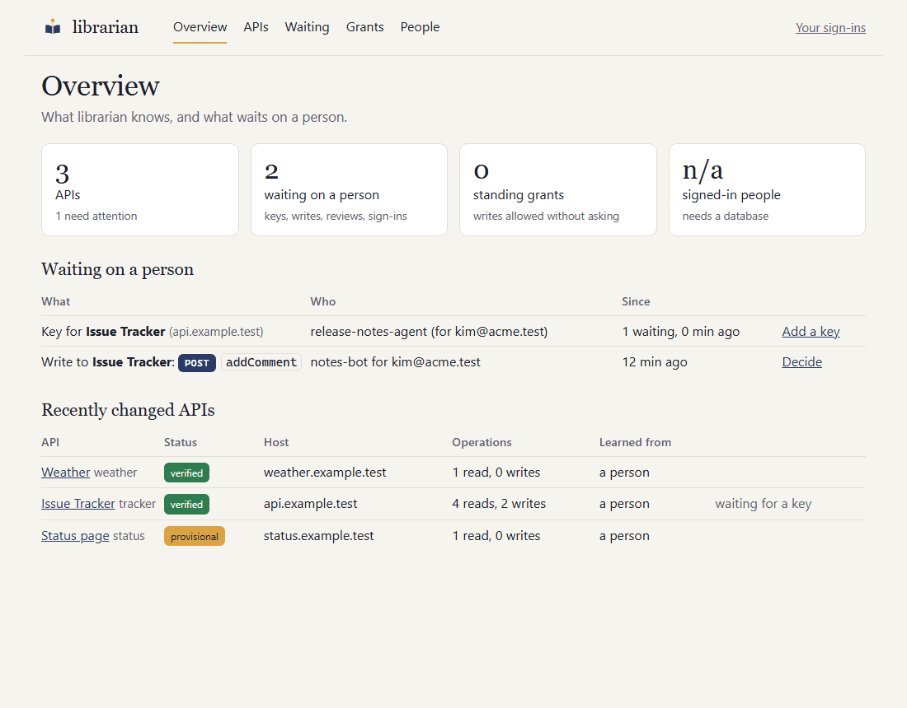
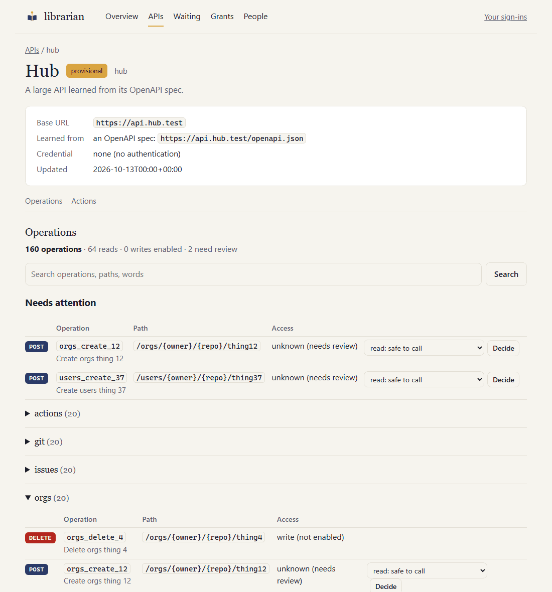
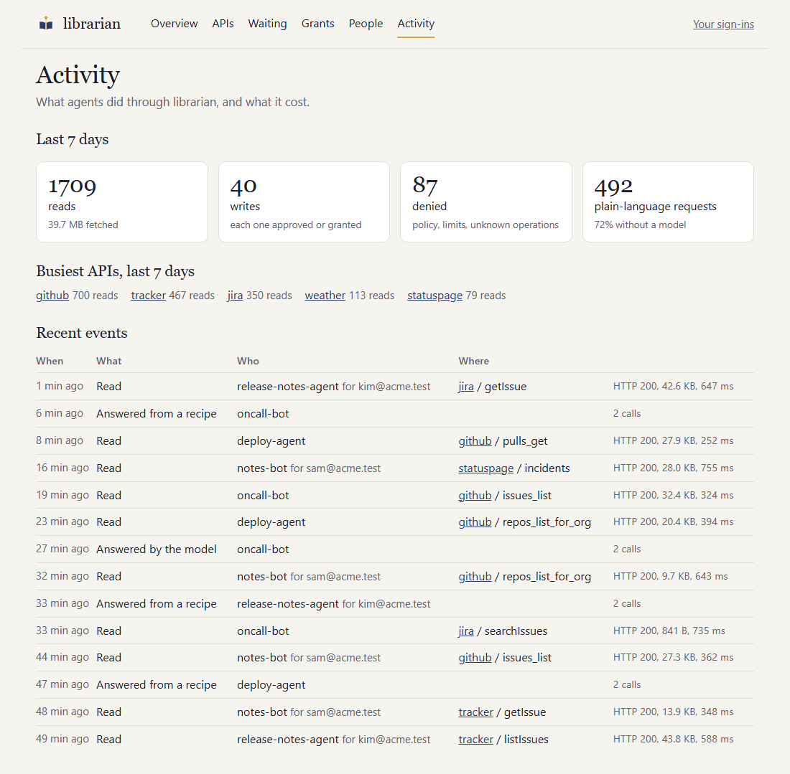
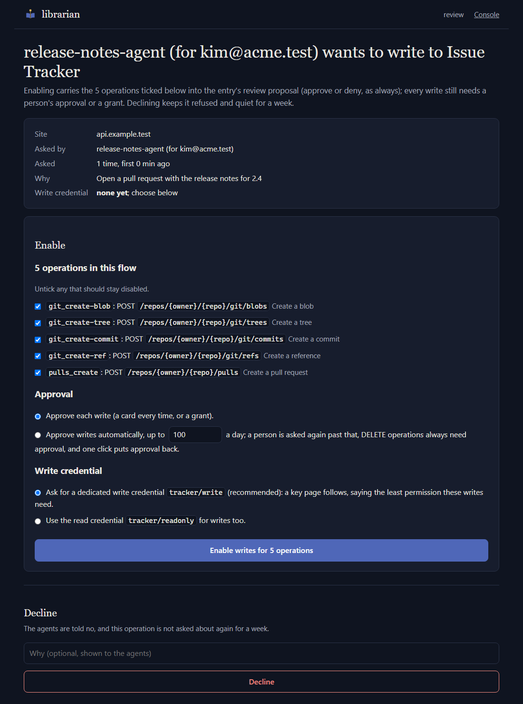
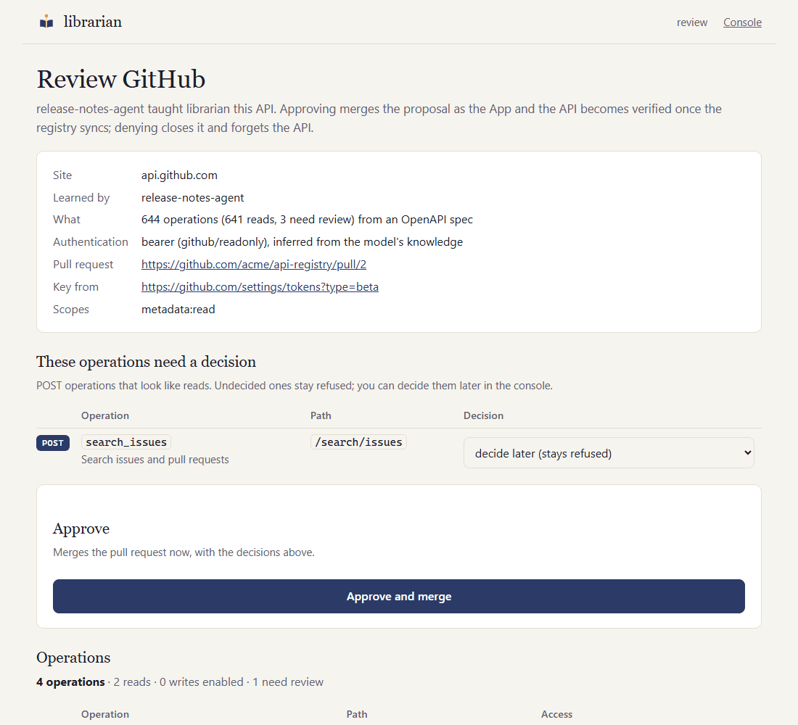
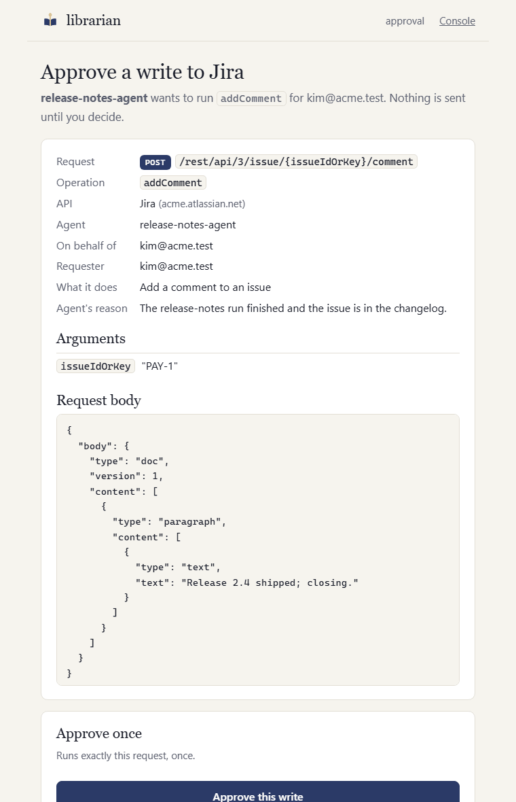

One librarian for every API your agents use.
Agents ask librarian for data instead of carrying their own API keys. It learns an API the first time one is needed, asks a person for the key once, serves reads within policy, and holds every write for a person's approval unless an approver decided in advance.
pip install librarian-a2a
docker pull ghcr.io/kultar/librarian:0.18.0Open source, Apache-2.0. Alpha: expect breaking changes before 1.0.
What happens on a request
Nothing is set up per API in advance. The registry fills itself as agents need things, and a person is asked only when a key is missing or data would change.
An agent asks for data from an API librarian doesn't know yet
Over A2A or MCP, through a gateway such as LiteLLM or directly. The agent names the API and what it wants; it never names a host, so it can't point librarian anywhere else.
librarian learns the API
From its OpenAPI spec, else its documentation (found by itself if needed, with every extracted operation quote-checked against the page), else the model's own knowledge. Reads work at once; a pull request is opened on your registry repo so a person can review the entry.
If the API needs a key, a person is asked once
The agent's task waits and approvers get a Slack card. Someone follows the one-time link, signs in and pastes the key. It goes straight to your secret store, never through Slack, an agent or a model, and the task carries on by itself. When the API needs the person's own sign-in instead, the person behind the agent gets the link, signs in to the provider once, and every later request for them carries their own token.
Writes wait for a person's approval
The approval page shows exactly what will be sent: method, path, arguments and body. Approve once, allow similar writes with a narrow, expiring grant, or decide once that an operation's writes are approved automatically, up to a daily cap and with one click back. DELETEs can only ever be approved one at a time. A write nobody has enabled yet is not refused silently: approvers get a card, enable the whole flow, and their decision is merged into the registry at once.
How access is held
Three kinds of access, chosen per API, and none of them ever in an agent's hands.
- A shared read-only key
- Added once by an approver on a one-time page, straight into your secret store. Every agent's reads use it, within policy. Agents, logs and the model only see a reference like
jira/readonly. - A separate write credential
- Reviewed into the entry, and used only after a person approves that exact write, a narrow, expiring grant covers it, or an approver chose automatic approval for that operation, capped per day. DELETE is never granted or automatic.
- The person's own sign-in
- For APIs where what you see depends on who you are: librarian is the OAuth client, each person signs in once in their browser, and every request their agents make for them carries their own token, so the API enforces their access. Tokens are stored per person, refreshed by librarian, never shown to agents, and a request for one person can never go out with another's token. People see and drop their own sign-ins in the console.
What people see
Agents talk to librarian over A2A or MCP. People get pages: a console for the people who run it, and one-time pages for the decisions only a person can make.






What your agents save
librarian removes the overhead around an API call: tool bloat, rediscovery, oversized payloads, and the keys every agent would otherwise carry. It does not shrink an agent's own reasoning, and says so.
- Seven tools instead of hundreds
- An agent with direct access carries an API's tool definitions in its context on every request; GitHub's spec alone has 1,242 operations. Through librarian an agent sees seven tools and asks for the handful it needs.
- Learning is paid once
- Reading documentation, searching for it and extracting operations is the expensive model work. It runs once per API, with a model you choose for it, then serves every agent.
- Most calls use no model at all
- Running a known operation is plain code: policy check, HTTP call, provenance. A plain-language request costs one planner call, and a successful plan becomes a recipe replayed without the model.
- Smaller answers
- Field selection and a response-size cap return what the agent asked for, not a whole payload into its context. Pagination is handled on librarian's side.
- Operations exist once
- Credentials, rotation, retries, change detection and the audit trail live in one place instead of in every agent.
- You can measure it
- The audit log records every call with its byte count and whether a model was involved, so a week of real traffic shows the split between plain calls, recipes and planner calls.
Why it's safe to put between agents and your APIs
The design assumes that agents can be talked into anything. So nothing an agent, a document or a model says can change what librarian is allowed to do.
- The model never decides
- A deterministic policy engine with no LLM in it authorises every call. The optional planner can only plan reads and propose writes.
- Credentials never travel through agents
- Keys enter on a one-time page and go straight to the secret store. Agents, messages, logs and the model only ever see references like
jira/readonly. - Writes need a person
- A verified registry entry, a separate write credential, and a human approval or a grant pinned to an agent, a person and an operation. Each write is sent once, with no redirects and an idempotency key, and claimed atomically so replicas never run it twice.
- Untrusted input is fenced
- The API host only ever comes from the caller's
base_url, never from documentation or search results. Read versus write is decided by HTTP method. Search results are trust-ranked and third-party sites are skipped by default. - No way out to your network
- An SSRF guard with DNS pinning refuses private addresses unless you allow them, redirects stay on the same origin, and response sizes are capped.
- Approval pages are locked down
- A separate listener behind your SSO proxy, one-time HMAC links that expire, a strict content security policy with no external resources, and every decision recorded with who made it. The console on the same listener shows credential references only, and every action there is audited too.
The full threat model lists each threat and its mitigation.
Get started
Three paths, depending on where you are. Each one is documented step by step and has been followed end to end.
On your laptop
Ten minutes with Docker. You see an API learned on demand, a key asked for out of band, and a write held for approval.
git clone https://github.com/kultar/librarian
cd librarian/examples/quickstart
docker compose up -d
./ask '{"skill":"capabilities"}'For your team
A Helm chart with oauth2-proxy sign-in, git-sync for the registry, Postgres for shared state and AWS Secrets Manager for keys. Two or more replicas, no volumes, nothing exposed to the internet.
helm install librarian oci://ghcr.io/kultar/charts/librarian \
--version 0.18.0 -n librarian -f values.yaml
helm test librarian -n librarianConnect your agents
Behind LiteLLM's agent gateway librarian is both an MCP server and an A2A agent. Any A2A or MCP client can also talk to it directly.
# LiteLLM config.yaml
mcp_servers:
librarian:
url: http://librarian.librarian.svc:8080/mcp
transport: http
auth_type: bearer_token
auth_value: os.environ/LIBRARIAN_GATEWAY_KEYWhat agents can ask for
The same five skills over A2A and as MCP tools (plus write_status and enable_status over MCP, where nothing waits on a person). Only fetch uses a model; everything else is plain code.
| Skill | What it does |
|---|---|
capabilities | Which APIs and read operations this agent may use. |
execute | Run one read operation, with optional field selection and pagination. |
onboard | Teach librarian an API: a spec URL, a docs URL, or just a base URL. |
write | Change data, after a person approves it, a grant covers it, or an approver chose automatic approval for that operation. If nobody has enabled the operation yet, approvers are asked. |
fetch | Plain language ("open bugs assigned to the payments team"), planned by a model and executed by the policy engine. |
Every result carries provenance: which API and operation, the URL with secrets redacted, when, for which agent and person, and which credential reference. The audit log is always on.
Documentation
- Getting startedThe laptop walkthrough with Docker Compose.
- Deploying for a teamKubernetes, step by step: registry App, Slack, SSO, secrets, database, replicas.
- IntegrationsLiteLLM, any A2A or MCP client, verified principals.
- Registry formatOne YAML file per API, reviewed by pull request.
- Threat modelAssets, actors, threats and mitigations.
- TroubleshootingWhat to check when agents, learning, Slack, sign-in or Kubernetes misbehave.
Roadmap
Done
- Reads within policy, writes with approval or grants
- Learning from specs, documentation and model knowledge, with change detection
- Slack cards, Helm chart, GitHub App for the registry repo
- MCP endpoint and the LiteLLM gateway
- Verified principals from your identity provider
- Replicas with shared state and no volumes, and one rate limit across them
- Internal APIs learned on demand within the domains you list
- A console for the people who run it: everything it knows, what waits on them, and the levers to revoke, block, re-learn and invalidate
- Approve or deny a learned API from Slack: the review card leads to a signed-in page, and approving merges the proposal as the App
- Acting as the person: APIs that need each person's own sign-in, with their own token and the API enforcing their access
- Activity in the console: the last seven days in numbers, the busiest APIs, and recent events per API
- Writes an agent wants but nobody has enabled yet become requests: Enable or Decline from Slack or the console, with a dedicated write credential asked for when there is none
- Whole write flows enabled in one go, slashes in path arguments that are paths or refs, and plain-language requests that answer within a time budget
- Automatic approval per operation with a daily cap and a one-click way back, and a Change control on every operation in the console
Next
- Console actions that answer at once, with the proposal, model guidance and Slack updates finishing in the background
- Verifying the SearXNG and Brave documentation search, and Google and Microsoft sign-in, live
Later
- Vault, GCP Secret Manager and Azure Key Vault
- A community registry of reviewed, signed entries